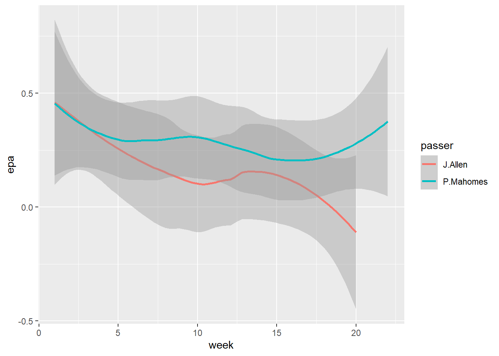

library(skimr)
library(tidyverse)
NFL2022_stuffs <- read_csv('https://bcdanl.github.io/data/NFL2022_stuffs.csv')
Q2a <- NFL2022_stuffs[!is.na(NFL2022_stuffs$posteam), ]danl200-hw5-ZALEN-AARON
Q1:
Currently a college student at SUNY Geneseo with a data analytics major.
Q2a: In data.frame, NFL2022_stuffs, remove observations for which values of posteam is missing.
Q2b: Summarize the mean value of pass for each posteam when all the following conditions hold:
wpis greater than 20% and less than 75%;downis less than or equal to 2; andhalf_seconds_remainingis greater than 120
subset_data <- NFL2022_stuffs[NFL2022_stuffs$wp > 0.20 & NFL2022_stuffs$wp < 0.75 &
NFL2022_stuffs$down <= 2 &
NFL2022_stuffs$half_seconds_remaining > 120, ]
# Summarize the mean value of pass for each posteam
Q2b <- aggregate(pass ~ posteam, data = subset_data, mean)Q2c: Provide both:
(1) a ggplot code with geom_point() using the resulting data.frame in Q2b
(2) a simple comments to describe the mean value of pass for each posteam.
- In the ggplot, reorder the
posteamcategories based on the mean value ofpassin ascending or in descending order.
Q2c <- ggplot(Q2b, aes(x = posteam, y = pass)) +
geom_point() +
labs(title = "Mean Value of Pass for Each posteam",
x = "posteam",
y = "Mean Pass Value") +
theme(axis.text.x = element_text(angle = 45, hjust = 1))Q2d: Consider the following data.frame, NFL2022_epa:
NFL2022_epa <- read_csv('https://bcdanl.github.io/data/NFL2022_epa.csv')Create the data.frame,
NFL2022_stuffs_EPA, that includesAll the variables in the data.frame,
NFL2022_stuffs;The variables,
passer,receiver, andepa, from the data.frame,NFL2022_epa. by joining the two data.frames.
In the resulting data.frame,
NFL2022_stuffs_EPA, remove observations withNAinpasser.
NFL2022_epa <- read_csv('https://bcdanl.github.io/data/NFL2022_epa.csv')
NFL2022_stuffs_EPA <- join_left <- NFL2022_stuffs %>%
left_join(NFL2022_epa)
Q2d <- NFL2022_stuffs_EPA[!is.na(NFL2022_stuffs_EPA$passer), ]Q2e.
Provide both (1) a single ggplot and (2) a simple comment to describe the NFL weekly trend of
weekly mean value ofepafor each of the following two passers,"J.Allen""P.Mahomes"
passers_data <- NFL2022_stuffs_EPA %>%
mutate( selected_passers = str_detect(passer, "J.Allen|P.Mahomes")) %>%
filter(selected_passers=="TRUE")
# Create ggplot
ggplot(passers_data, aes(x = week, y = epa, color = passer)) +
geom_smooth()
#J.Allen's epa has averaged down over the weeks, while P.Mahome's has gone upQ2f.
Calculate the difference between the mean value of epa for "J.Allen" the mean value of epa for "P.Mahomes" for each value of week.
Q2f <- passers_data %>%
group_by(passer,week) %>%
summarise(mean_epa= mean(epa))Q2g.
Summarize the resulting data.frame in
Q2d, with the following four variables:posteam: String abbreviation for the team with possession.passer: Name of the player who passed a ball to a receiver by initially taking a three-step drop, and backpedaling into the pocket to make a pass. (Mostly, they are quarterbacks.)mean_epa: Mean value ofepain 2022 for eachpassern_pass: Number of observations for eachpasser
Then find the top 10 NFL
passers in 2022 in terms of the mean value ofepa, conditioning thatn_passmust be greater than or equal to the third quantile level ofn_pass.
summary_data <- Q2d %>%
group_by(posteam, passer) %>%
summarize(
mean_epa = mean(epa, na.rm = TRUE),
n_pass = n())
third_quartile <- quantile(summary_data$n_pass, 0.75)
Q2g <- summary_data %>%
filter(n_pass >= third_quartile) %>%
arrange(desc(n_pass)) %>%
head(10)